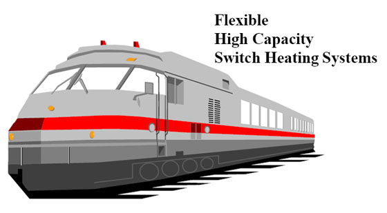
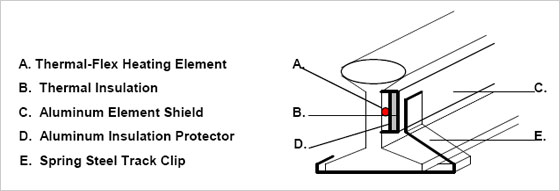

| Flexible
High Capacity
Switch Heating Systems (OVERVIEW) |
|  |
| |
Since 1976, Thermal-Flex High Capacity Switch Heating Systems have been subjected to the tough climatic
conditions of severe northern winters. Thousands of systems have been delivered to U.S. and Canadian
railroads since 1978.
This railroad switch heating system utilizes materials and techniques developed by Thermal-Flex, Inc. for
relieving internal stresses created in massive steel parts (ex. pipes, valves, etc.) by the heat of welding. The
elements of the system are tough and long lasting, since they were originally designed to withstand the wear
and tear of repeated use in the rugged conditions of the construction sites. |
| |
| The elements of the Thermal-Flex High Capacity Switch Heating System are shown in the drawing below. |
| |
|  |
| |
| The Thermal-Flex heating cable is encased in a spiral fluted, watertight tubing and is positioned at the
neutral axis of the outside of the stock rail. The heater is covered by thermal insulating material. |
| |
| An aluminumshield covers the insulating material. The entire assembly is held in place by steel track clips. |
| |
The heart of the system is the unique heating cable, which has been perfected and utilized by Thermal-Flex
Systems for more than 25 years. It is used in stress-relieving systems by major power facilities,
engineering/construction firms, the U.S. Navy and many manufacturing facilities. |
| |
| Railroad Experience |
The first Thermal-Flex Switch Heating System was installed in November of 1976 on a 30 foot spring
switch for the main line of the Central Vermont Railway at White River Junction, Vermont. |
| |
This prototype was improved by the addition of two crib heaters to heat the rod areas. This improved
system was installed on a 22-foot power operated switch at the same Vermont location. |
| |
Following further refinements, thousands of Thermal-Flex switch heating systems have logged additional
experience on other North American railroads under a wide range of climatic and operating conditions. |